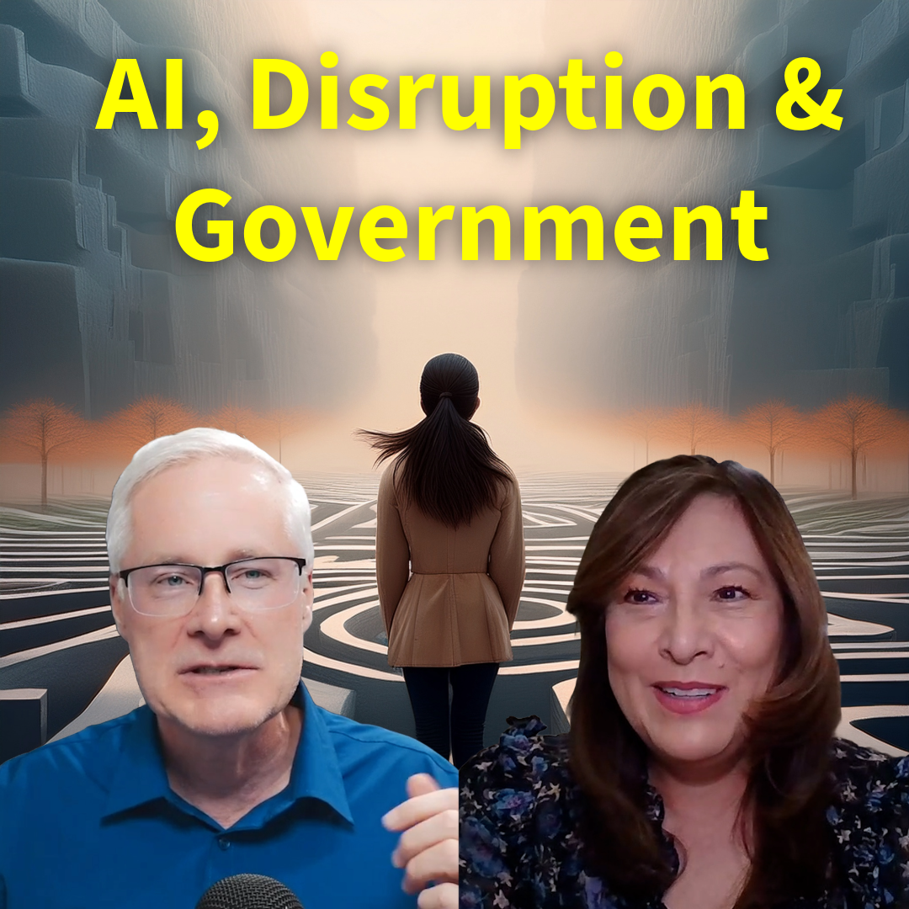

#256 Unlocking AI's Potential in Business
Andrew Amann condivide il suo percorso da lavorare su sottomarini nucleari a guidare un'agenzia di IA focalizzata sull'innovazione e il miglioramento dei processi in questa conversazione. Discute delle sfide che le aziende affrontano nell'adottare l'..
Guarda Ora Ascolta Ora

#255 AI, Disruption and Government, Managing Career Growth
In questo episodio coinvolgente, il Dr. Darren e la Dr.ssa Madeleine Wallace discutono delle attuali interruzioni nei settori governativo e consulenziale, sottolineando l'importanza dell'efficienza e dell'efficacia nei programmi. Esplorano le sfide d..
Guarda Ora Ascolta Ora